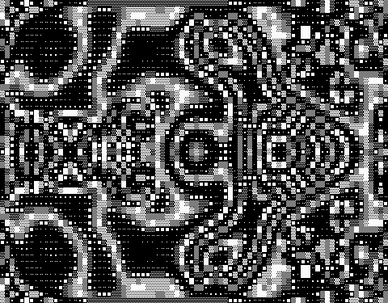
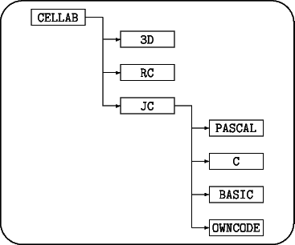
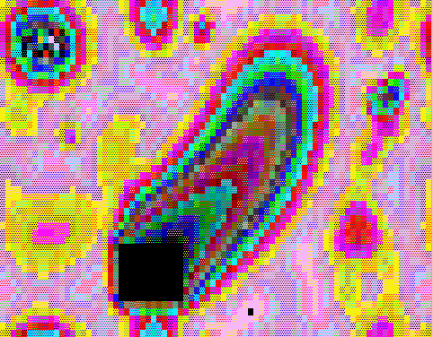
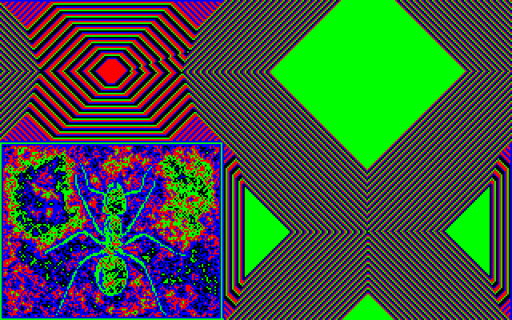
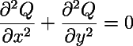

Most of the programs in the Rudy Rucker Cellular Automata Lab are two-dimensional cellular automata. In these programs the computer screen is divided up into "cells" which are colored rectangles or dots. Each cell is repeatedly "updated" by changing its old color to a new color. The net effect of the individual updates is that you see an ever-evolving sequence of screens. A graphics program of this nature is specifically called a cellular automaton when it is 1) parallel, 2) local, and 3) homogeneous.
(1) Parallelism means that the individual cell updates are performed independently of each other. That is, we think of all of the updates being done at once. (Strictly speaking, your computer only updates one cell at a time, but we use a buffer to store the new cell values until a whole screen's worth has been computed to refresh the display.)
(2) Locality means that when a cell is updated, its new color value is based solely on the old color values of the cell and of its nearest neighbors.
(3) Homogeneity means that each cell is updated according to the same rules. Typically the color values of the cell and of its nearest eight neighbors are combined according to some logico-algebraic formula, or are used to locate an entry in a preset lookup table.
Cellular automata can act as good models for physical, biological and sociological phenomena. The reason for this is that each person, or cell, or small region of space "updates" itself independently (parallelism), basing its new state on the appearance of its immediate surroundings (locality) and on some generally shared laws of change (homogeneity).
As a simple example of a physical CA, imagine sitting at the edge of a swimming pool, stirring the water with your feet. How quickly the pool's surface is updated! The "computation" is so fast because it is parallel: all the water molecules are computing at once. And how does a molecule compute? It reacts to forces from its neighbors (locality), in accordance with the laws of physics (homogeneity).

The RC Rug rule in Bleachmode. Pattern was evolved from blank screen in Nowrap mode, with full symmetry broken by a short burst of Jogmode.
RC is an interactive low-resolution CA driver, and JC is a programmable high-resolution CA driver. Loosely speaking, RC is a right-brain hands-on program, and JC is a left-brain analytic program. Moving back and forth between RC and JC enables you to gain intimate knowledge of cellular automata and to begin using them in applications.
RC shows patterns made up of colored text characters, primarily the solid block, checkered block, and the half block (whose ASCII codes are respectively 219, 176, and 220). Since this is a textmode simulation of pixel-based graphics, RC works on machines which do not have graphics cards-indeed, it even runs on generic monochrome clones. When running on more powerful machines, RC adapts to show more cells. Depending on the machine, RC shows anywhere between 80×25 and 80×100 cells. On an AT, the speed is about 6 screen updates a second. On a 386 the speed approaches or exceeds the 30 updates per second of commercial animation. A broad range of realtime keyboard interactions with the RC programs is possible. With a little practice, you can effectively "play" them like a color organ.
Within a limited range, entirely new programs can be defined by you as well. We give you RC in two versions: RC.EXE and RCC.COM. RC.EXE includes a control panel display written in C by Joseph Cusick, a recent graduate of San Jose State University. RCC.COM is the assembly language core of RC.EXE. RCC.COM behaves the same as RC.EXE, except that it does not include the control panel display. The point of having RCC.COM is that it is so small (12K) that you can squeeze it onto other disks you work with.
JC.EXE shows cellular automata in 320×200 pixel graphics-mode, with eight bits of color per pixel. These programs require a machine with true graphics capability-CGA or EGA will do, VGA is better. The fact that JC uses eight bits of color means that when you run it on a VGA monitor you see self-generating computer graphics movies in 256 colors (as opposed to the four colors you see in CGA). As JC shows about eight times as many "dots" or cells as does RC, it runs a bit more slowly, though not nearly as slowly as one might expect. On an AT, an update rate of 1 screen per second is typical. We include a utility for making RAM movies of JC program runs and playing them back at animation speeds. The most innovative feature of JC is that it is programmable in BASIC, Pascal, and C. If you can write a half-page program in any of these languages, you can program JC to display any cellular automaton rule you can think of.
The CelLab package includes a variety of files and programs to support RC and JC programs, plus two standalone cellular automata programs that don't fit the rule formats of RC and JC. As a final bonus, the package includes two three-dimensional cellular automaton movies by John Walker.
Rudy Rucker, the author of thirteen books of science-fiction and popular mathematics, is Professor of Mathematics and Computer Science at San Jose State University. John Walker is founder and former president of Autodesk, Inc. Autodesk's best-known product is a computer-aided design (CAD/CAM) graphics program called AutoCAD.
Let us suppose for purposes of discussion that the hard drive is C:. If you are using a shell or window program, you should exit the program and get into DOS. You know you are in DOS when you see a prompt that looks something like this:
C:
Create a new directory for CelLab with the command:
mkdir cellab
and make that the current directory with the command:
cd cellab
Now simply execute the archive file as a command. Here we'll assume the downloaded archive file CELLAB.EXE is in a directory called DOWNLOAD on drive C:.
\download\cellab
Extracting the archive creates three subdirectories: 3D, JC, and RC. The JC directory has three subdirectories holding rule definitions in Pascal, C, and BASIC, plus assembly language evaluators in OWNCODE. After a typical installation, the directory structure will look like this:

copy c:\cellab\jc\pascal\*.* c:\cellab\jc
Finally, once you're done installing CelLab, you can delete the CELLAB.EXE distribution archive.

Boot up your computer and transfer control to the RC directory. If you installed according to the procedure above, you might do this by entering cd c:\cellab\rc. Then execute the RC program with the command:
rc
RC should now show you the multistate rule called Rug.
Once RC (or RCC) is running, the keyboard acts as an interactive control panel. Pressing various keys will affect the screen in various ways. The help bar at the bottom of the screen summarizes some information about the keys. The program is case-sensitive, so if your Shift-Lock or Caps-Lock is on, most of your keypresses will be misinterpreted. So before going any further,
MAKE SURE YOUR CAPS-LOCK IS NOT ON!
If the display looks snowy or fragmented, try pressing m for "mode" a few times to cycle through the display options (there are four options), as it may be that our program has autodetected the wrong choice of display mode for your particular system's combination of card and monitor. An important key to know is q for quit. See if you can quit and restart the program.
q
rc
This should put you back into Rug. Try giving Rug some random info to chew on. How? Press the r key to randomize the screen.
r
See the black square? You can take hold of it and drag it around, leaving a sort of wake. How? Press Shift-0 to tell the machine you want to move the black "zero" block. (Use the zero at the top of the keyboard, not the numeric pad.) Then press any arrow key to move the square. The arrow keys may not work if your Num Lock key is on, so
MAKE SURE YOUR NUM-LOCK IS NOT ON!
There are actually four little "mask" blocks on the screen: the blank BlackBlock, toggled on and off by 0; the bright WhiteBlock toggled on and off by 1; the strobing FlickerBlock toggled on and off by 2; and the spewing RandomBlock toggled on and off by 3. Next you might try growing a symmetrical ruglike mandala. Turn off the blocks by pressing 0, 1, and 3. To get the biggest possible image, turn off the help bar by pressing h. Then turn off the screen wrap by pressing w, and then reset the screen to Zero by pressing z.
0
1
3
h
w
z
Watch the mandala grow for awhile. If you have a CGA monitor, the pattern will begin to freeze up. Press the v key twice to goose it. If you'd like to slow the rule down for a bit, press the comma key to slow it down. Pressing the period key speeds it back up.
v
v
,,,
...
That should do it. If you have a color monitor, now try bleaching the image black and white by pressing b. To get color back press b again. If you are beginning to lose track of what the keypresses stand for, press h to call up a little help bar at the bottom of the screen. If you're really confused, press a to toggle into our virtual control panel where the various keypress settings are displayed. Another a press takes you out of the control panel and back into the cellular automaton.
b
b
h
a
a
Now try a different style of rule. Every time you press g, RC will Get a new RuleStyle. RC has five RuleStyles: Rug, Brain, Random, Vote, and ASCII. If you press g in Rug you will get the rule Brain. It may be that your Rug didn't leave enough food on the screen to keep Brain going, so you better turn the RandomBlock back on by pressing 3.
g
3
Brain is a really neat rule closely related to the best known CA rule of all, Life. After you've watched Brain for awhile, you can switch to Life by pressing v. Life will come up with a colored echo; if you would rather see pure Life, press e to turn the Echo off. And now try doubling the number of lines on the screen by pressing d. If you tire of Life, you can get back to Brain by pressing Shift-V.
v
e
d
Shift-V
Now press g to get to the next rule in RC, a rule called Random. What characterizes Random is that every time you press n in Random, you will see a new, randomly selected rule. Press n till you find one you really like, and then save that rule by pressing a to get into the control panel, pressing r to pull down the Rule commands, pressing s for Save, and then typing in a name, say FIRST.
g
n n n n n n n n n n n n n n n n
a
r
s
FIRST
Next you might like to try loading some of the rule tables stored in Random. Press r and then l to see the list of rules you can load. Move the highlight to one of them-Rainzha, Faders, and Balloons are nice-and press Enter to select the rule. Then press a to see the CA in action.
r
l Enter
Use arrow keys to move highlight, then press Enter
a
If you press g again you'll get into Vote. Hit r a few times until Vote manages to stretch a band across the screen. Now try n to see some cheap mandalas. Then hit g again to get into ASCII. Randomize ASCII a few times and watch how it eats stuff. Press v a few times to make ASCII cook harder. And then hit g one last time to get back to Rug, and remember that q will get you out whenever you're ready.
r r r r r r
n n n n n n n n n n n n
g
r r r r r r r r r
v v v
g
Welcome to cellular automata!
By the way, we've also included a completely automatic three-minute demo of RC. To view it, get to the DOS prompt and enter
rcdemo

I feel that science's greatest task in the late twentieth century is to build living machines: intelligent artificial life, known as a-life for short. In Cambridge, Los Alamos, Silicon Valley and beyond, this is the computer scientist's Great Work as surely as the building of the Nôtre Dame cathedral on the Ile de France was the Great Work of the medieval artisan.
There are two approaches to the problem of creating a-life: the top/down approach, and the bottom/up approach.
The top/down approach is associated with AI (artificial intelligence), the bottom/up with CA (the study of cellular automata). Both approaches are needed for intelligent artificial life, and I predict that someday soon chaos theory, neural nets and fractal mathematics will provide a bridge between the two. What a day that will be when our machines begin to live and speak and breed-a day like May 10, 1869, when the final golden spike completed the U.S. transcontinental railroad! The study of CAs brings us ever closer to the forging of that last golden link in the great chain between bottom and beyond. If all goes well, many of us will see live robot boppers on the Moon.
A heckler might say, "Sure that's fine, but why are CAs needed? Why have a bottom/up approach at all? What do mindless colored dots have to do with intelligent artificial life?"
For all humanity's spiritual pretensions, we need matter to live on. And CAs can act as the "matter" on which intelligent life can evolve. CAs provide a lively, chaotic substrate capable of supporting the most diverse emergent behaviors. Indeed, it is at least possible that human life itself is quite literally based on CAs.
How so? View a person as wetware: as a protein factory. The proteins flip about like John Holland's genetic programs or like A. K. Dewdney's flibs; generating hormones, storing memories. Looking deeper, observe that the proteins' nanotech churning is a pattern made up of flows and undulations in the potential surfaces of quantum chemistry. These surfaces "smell out" minimal energy configurations by using the fine fuzz of physical vacuum noise-far from being like smooth rubber sheets, they are like pocked ocean swells in a rainstorm. The quantum noise obeys local rules that are quite mathematical; and these rules are in fact very well simulated by CAs.
Why is it that CAs are so good at simulating physics? Because, just as
in physics, cellular automaton computations are i) parallel, ii)
local, and iii) homogeneous. In both physics and in CAs, i) the world
is happening in many different places at once, ii) there is no action
at a distance,
 and iii) the laws of nature are the same everywhere.
and iii) the laws of nature are the same everywhere.
Whether or not the physical world really is a cellular automaton, the point is that CAs are rich enough that a "biological" world could live on them. We human hackers live on language games on biology on chemistry on physics on mathematics on-something very like the iterated parallel computations of a CA. Life needs something to live on, intelligence needs something to think on, and it is this seething information matrix which CAs can provide. If AI is the surfer, CA is the sea.
That's why I think cellular automata are interesting: A-life! CAs will lead to intelligent artificial life!
Rudimentary CA a-life already exists in the form of Brain's haulers, Vote's oscillators, and such classic Life patterns as Gosper's glider gun.
In the 1970s, Berlenkamp, Conway, and Guy proved that putting a lot of these objects together can make a universal serial computer, such as a PC. Any serial computation can be done by a CA, and any CA computation can in turn be done by a serial computer-in support of this last point, note that all the programs on this disk are serial programs written in C, Pascal, BASIC, and/or 8086 assembly language.
Many computations can be done much more rapidly and efficiently by a succession of massively parallel CA steps. And one does best to use the CA intrinsically, rather than simply using it as a simulation of the old serial mode-emulating an Intel chip by using a galaxy-sized array of blocks and glider guns is not the way to go. No, when we use CAs best, we do not use them as limpware animations of circuit diagrams. While behaviors can be found in top/down expert-system style by harnessing particular patterns to particular purposes, I think by far the more fruitful course is to use the bottom/up freestyle surfing CA style summed up in the slogan:
New dimensional CA hacks are possible, new and marketable techniques of parallel programming are lying around waiting to be found, both in the form of individual CA structures and in the form of wholly different rules.
CA structures are labile and breedable in three senses: one can collide and interface different local patterns within the framework of a fixed CA rule, one can combine globally different CA rules (or ideas about them) to produce wholly new ecologies, or one can "gene-splice" the logic of successful rules. Then, like Alexander von Humboldt in the Americas, one botanizes and zoologizes and mineralizes, looking for whatever artificially alive information structures can be found in the new worlds. As always both top/down and bottom/up approaches are viable. We use bottom/up to find new ecologies and their flora and fauna. We use top/down to seed a given instance of a particular ecology with the sort of gene-tailored computer agents we want to breed.
In my own bottom/up searches I begin simply by hoping that my programs will display interesting output for a long time. Then I begin to hope that my programs will be robust under varying initial conditions, and that they will be reactive in anthropomorphizable ways. Once the program is, at this very rudimentary level, artificially alive, I may cast about for applications in some practical domain.
I think the most productive near-term applications of CAs are to image generation and image processing. A cycle or two of Vote, for instance, can be used for easy image cleanup, munching down all stray "turd bits". This technique, known as "convolution" in the literature, is used every day by NASA's massively parallel computer in Beltsville, Maryland, to process terabyte arrays of satellite photo data. Present-day designers of the newest commercial paint and graphics packages for the VGA will be putting CA rules into their image processor toolboxes. (Look, for instance, at what Border does to Dr. Tim's face.)
In the area of original image generation, I predict that one of the next big commercial computer graphics fads will be CAs. How about a logo that instead of being chrome is matte and luminous, with a smooth curved surface made of tiny moving mosaics of light, lightbits that form the crawling dirty haulers of Brain or the psychedelic shudder of Rug? These are what the expressive "flickercladding" skins of the robots look like in my two a-life science fiction novels, Software and Wetware.
Many simulation applications exist as well. The idea is to find a CA rule that looks like something you want to model. If you are lucky there will be some common underlying mathematics between the two. The Rug rules, for instance, are difference method solutions of the same differential equation, the Laplacian heat equation:

This means, e.g., that a fine-grained Rug rule inside a fixed circular boundary set may serve as a viable model of a vibrating drumhead!
A last current application of CAs is to encryption.
Either a CA can
serve as a cheap source of "essentially random" encryption bits, or
the whole message can be fed to a reversible CA.
Stephen Wolfram claims actually to have patented the one-dimensional
rule with Wolfram code #30 as part of an encryption
scheme.

But to recapitulate, the real reason for studying CAs is to
promote artificial life. The most important
use for cellular automata will be as "universes" or "arenas" in
which to evolve better fractals, flibs, core-warriors, neural nets and
expert agents, using gene-splicing, mutation, and our own "divine
interventions" to achieve a rapid and dramatic evolution in these
parallel processes. CA workers need your help in accomplishing the
manifest destiny of mankind: to pass the torch of life and
intelligence on to the computer. There are no more than a few hundred
active workers in the CA field today
 twenty-first century technology will need thousands more!
twenty-first century technology will need thousands more!
A cellular automaton (CA) is a mechanism for modeling systems with local interactions. A cellular automaton is a regular lattice of cells with local state, which interact with their neighbors subject to a uniform rule which governs all cells. The neighborhood (the set of cells whose state can affect a given cell at one instant) can be classified by the dimensionality of the automaton (most experimentation is done with one- or two-dimensional automata), and by the geometric fashion in which cells are interconnected.
The rule is the "program" that governs the behavior of the system. All cells apply the rule, over and over, and it is the recursive application of the rule that leads to the remarkable behavior exhibited by many cellular automata. When experimenting with cellular automata, one is primarily engaged in defining new rules which lead to interesting or useful behavior. The programs in CelLab are tools for the person engaged in such experiments. Our programs allow you to create a rich set of rules and experiment with their behavior without requiring the purchase of expensive special-purpose hardware.
Cellular automata appear to be abstract and devoid of practical applications, much as was said of computer graphics not long ago. If you want to model a universe which seems to be made up of particles which interact locally, there are two basic ways to go about it. The first is to create a huge array of numbers that represents the interacting items, then find the biggest number cruncher you can lay your hands on and set it gnawing away at the problem. The supercomputer boom, fueled by applications of this approach to weather prediction, computational fluid dynamics in the transonic and hypersonic regimes, plasma dynamics, and an almost endless list of other applications testifies to the effectiveness of this approach.
But maybe there's another way. Until recently, cellular automata were primarily a theoretical tool. The price of a cellular automaton with uniform edge size increases as the nth power of its size, where n is the dimensionality of the cellular automaton. This gets out of hand rapidly, even if you're only working with two dimensional cellular automata. Therefore, although they may be the way the universe is really assembled and therefore worthy of study, no one would consider building one!
Hardware realizations of cellular automata, such as the CAM-6 board, have been built. The CAM-6 is not a true cellular system; it emulates one by using a fast RAM array and a look-up table, but it permits exploration of a rich set of cellular automata with performance adequate to study their behavior in detail. The CAM-6 is a highly effective tool, but it is, at $1,500, an expensive one. It's priced out of the reach of many creative people who should be exploring cellular automata. It was the desire to make cellular automata experimentation available at a low price to a large number of people that spurred the development of this product.
For cellular automata need only to find a concrete, compelling application to a real-world problem to burst into silicon and totally change the way we think about computing. Consider this: inside the computer you're using now are ranks and ranks of RAM chips. A 256K×1 static RAM chip has a memory cell consisting of four to six transistors, connected in rows and columns to circuitry on the periphery of the chip. Even when the computer is running flat-out, you're using precisely one cell at a time. This is the classic bottleneck in the von Neumann computer architecture (John von Neumann was very aware of this problem; in fact, he and Stanislaw Ulam invented cellular automata precisely as a tool for modeling complex systems), which has led to proposals such as Backus' functional programming, neural systems, and many other architectural proposals, such as SIMD machines, which seem to be more effective in generating Ph.D.s than numbers.
If a two-dimensional cellular automaton with 256K cells were realized in silicon, it could compute 262,144 times faster than a serial processor accessing data bit-by-bit from a memory array. Yet, engineered for volume production, made in comparable volumes, and given time to slide down the learning curve, it need cost no more than a RAM chip. This is the potential of cellular automata. The beauty of two-dimensional cellular automata is that they map perfectly into our semiconductor manufacturing technology: they need the things it does best as opposed to, say, neural systems where the number of connections exceeds the capability of two layers of metal.
If there is merit in Edward Fredkin's suggestion that the fine-grain structure of the universe is really a cellular automaton, then cellular automata machines will play the role of particle accelerators in exploring this level of reality.
Some of the brightest minds of our century have been involved with cellular automata because they comprehended what cellular automata can do. John von Neumann, Stanislaw Ulam, John Horton Conway, Stephen Wolfram, and Edward Fredkin do not spend their time on nonsense. With the Rudy Rucker CelLab, you can begin to explore the potential that attracted those men to create and research this new way to compute. And perhaps you will discover something that will add your name to the list.
There's plenty to discover. Rudy's semitotalistic 16-state RC program permits you to create 1616×9 different rules for cellular automata. This is a number slightly larger than 10176. My more general 256-state JC program lets you program 256216 distinct CA rules, which is a number larger than 10157,826. These numbers are "effectively infinite". Roughly 1017 seconds are thought to have elapsed since the big bang ushered in the universe. If you had been around since then, creating, testing, and evaluating one rule per second, you still wouldn't have made a dent in this number, anymore than a buck makes a dent in a trillion dollars. Take away one dollar and you still have about a trillion. Even with enough time, you'd have a lot of trouble writing down the results of your exhaustive search for rules, as the universe is believed only to have on the order of 1080 particles in it, so you'd run out of places to make notes even if you turned the entire universe into a cosmic all-encompassing Post-it® note. If the still-unconfirmed Grand Unified Theories are correct, by the time 1040 seconds have passed, more than half of the protons will have evaporated into little poofs of energy and leptons, taking with them the fruits of your labors, and leaving what's left of you with 10157,826 bottles of beer still on the wall.
So get started, people! The human mind works a lot better than blind search (one imagines a middle manager reporting, "Nothing much yet-we need more monkeys, more typewriters."). CelLab unleashes your creativity in a virtually infinite domain, where your discoveries may be not only interesting or rewarding, but may create a whole new world. The challenges in cellular automata are clear: how to realize them in hardware, how to apply them to useful tasks, and how to make money doing it. You now possess a tool for exploring all three.
To give a flavor of some of the recent work, this section lists a few references in addition to the ones which appear in our main bibliography at the end of the book.
A. Appel and A. J. Stein, "Cellular Automata for Mixing Colors", IBM Tech. Disc. Bull. 24, 1981, p. 2032.M. Meriaux, "A Cellular Architecture for Image Synthesis", Microprocessors and Microprogramming 13, 1984, p. 179.
K. Preston, "Basics of Cellular Logic with Some Applications in Medical Image Processing", Proc. IEEE 67, 1979, p. 826.
A. Rosenfeld, "Parallel Image Processing Using Cellular Arrays", Computer 16, 1983, p. 14.
G. Cocho, G. Perez-Pascual, J. Ruis, & F. Soto, "Discrete Systems, Cell-Cell Interactions, and the Color Patterns of Animals", J. Theor. Biol. 125, 1987, p. 437.I. Dayan, D. Stauffer, & S. Havlin, "Cellular Automata Generalization of the Weisbuch-Atlan Model for Immune Response", J. Phys. A, Math. Gen. (UC) Vol. 21, No. 10, May 1988, p. 2473.
W. Duchting and T. Vogelsaenger, "Aspects of Modelling and Simulating Tumor Growth and Treatment", J. Cancer Res. Clin. Oncology 105, 1983, p. 1.
T. Kitagawa, "Cell Space Approaches in Biomathematics", Math. Biosciences 19, 1974, p. 27.
M. Kumura & G. Weiss, "The Stepping Stone Model of Population Structure and the Decrease of Genetic Correlation with Distance", Genetics 49, 1964, p. 561.
M. Mainster, "Cellular Automata: Retinal Cells, Circulation, and Patterns", Eye 6, 1992, p. 420.
L. Sander, "Fractal Growth Processes", Nature 322, 1986, p. 789.
J. Vincent, "Cellular Automata: A Model for the Formation of Color Patterns in Molluscs", J. Molluscan Stud. 52, 1986, p. 97.
D. Young, "A Local Activator-Inhibitor Model of Vertebrate Skin Patterns", Math. Biosciences 72, 1984, p. 51. ¹
C. Burks & D. Farmer, "Towards modelling DNA sequences as automata", Physica D, V. 10, No. 1-2, 1984, p. 157.J. Greenberg and S. Hastings, "Spatial Patterns for Discrete Models of Diffusion in Excitable Media", SIAM J. Appl. Math. 34, 1978, p. 515.
Y. Oono & M Kohmoto, "A Discrete Model of Chemical Turbulence", Phys. Rev. Lett. 55, 1985, p. 2927. ¹
B. Chopard, and M. Droz, "Cellular Automata Model for Heat Conduction in a Fluid", Phys. Lett. A (Netherlands) V. 126, No. 8-9, January 1988, p. 476.M. Colvin, D. Frenkel, & A. Ladd, "Application of Lattice-Gas Cellular Automata to the Brownian Motion of Solids in Suspension", Phys. Rev. Lett. V. 60, No. 11, 1988, p. 975.
M. Creutz, "Deterministic Ising Dynamics", Ann. Phys. 67 (1986), p. 62. ¹
G. Doolen & D. Montgomery, "Magnetohydrodynamic Cellular Automata", Phys. Lett. A, V. 120, No. 5, 1987, p. 229.
U. Frish, B. Hasslacher and Y. Pomeau, "Lattice Gas Automata for the Navier-Stokes Equation", Phys. Rev. Lett. 56, 1986, p. 1505. ¹
H. Gerola & P. Seiden, "Stochastic Star Formation and Spiral Structure of Galaxies", Astrophys. J. 223, 1978, p. 129.
U. Frisch, D. d'Humieres, B. Hasslacher, P. Lallemand, P. Pomeau, & J. Rivet, "Lattice gas hydrodynamics in two and three dimensions", Complex Systems, 1987, p. 649.
N. Packard, "Lattice models for solidification and aggregation", Proc. First International Symposium for Science on Form, Tsukuba, Japan, 1986. ¹
J. Park, K. Steiglitz and W. Thruston, "Soliton-like Behavior in Automata", Physica D 19, 1986. ¹
G. Vichniac, "Simulating physics with cellular automata", Physica D 10, 1984, p. 96.
P. Guan, "Cellular automaton public-key cryptosystem", Complex Systems 1, 1987, p. 51.D. Hillis, "The Connection Machine: A Computer Architecture Based on Cellular Automata", Physica D 10, 1984, p. 213.
T. Hogg & B. Huberman, "Parallel Computing Structures Capable of Flexible Associations and Recognition of Fuzzy Inputs", J. Stat. Phys., 1986.
S. Kirkpatrick, C. Gelatt, & M. Vecchi, "Optimization by Simulated Annealing", Science 220, 1983, p. 671.
R. Minnick, "A Survey of Microcellular Research", J. ACM 14, 1967, p. 203.
J. Taboury, J. Wang, P. Chavel, F. Devos, & P. Garda, "Optical Cellular Processor Architecture", Appl. Opt. Vol. 27, No. 9, May 1988, p. 1643.
Researchers should also be aware of the bimonthly journal Complex Systems, which carries many articles about cellular automata. The address of Complex Systems is P.O. Box 6149, Champaign, IL 61821-8149, USA.